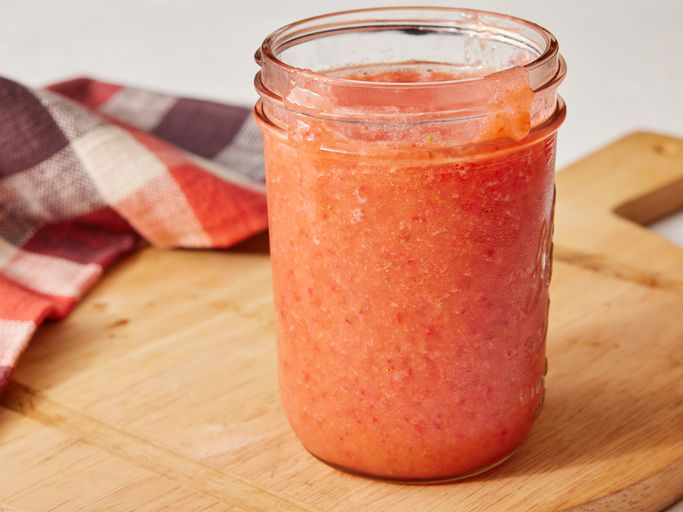
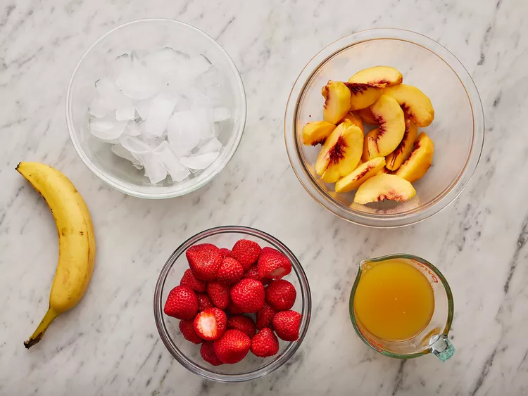
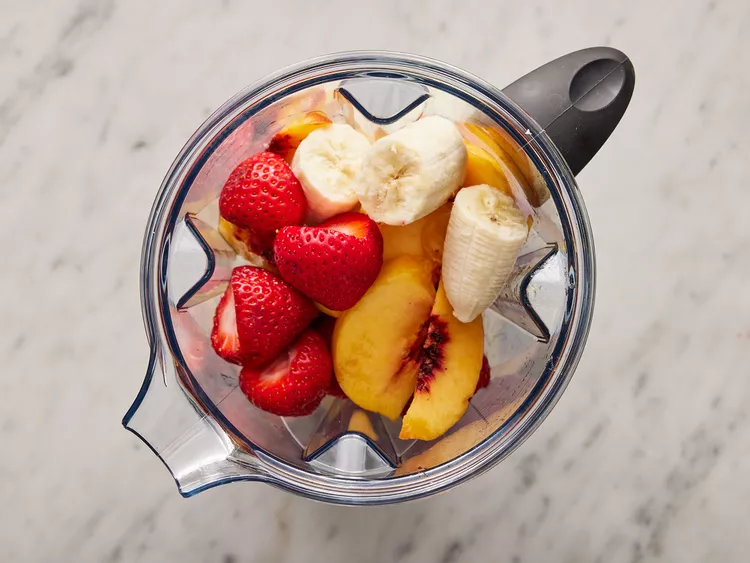
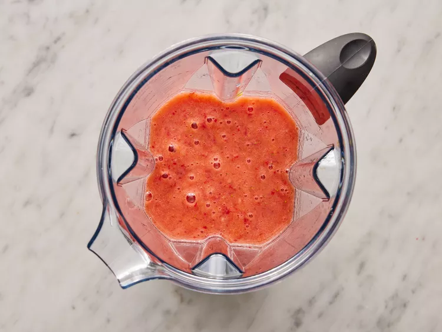
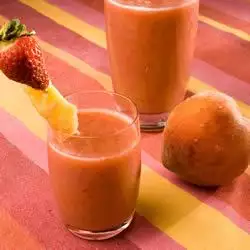

Basic Fruit Smoothie

Description
A smoothie is a beverage made by pureeing ingredients in a blender.
A smoothie commonly has a liquid base, such as fruit juice or milk, yogurt or ice cream, in this recipe
our smoothie will be fruit based
Ingredients :
- 1 quart strawberries, hulled
- 2 fresh peaches - peeled, pitted, and sliced
- 1 banana, broken into chunks
- 2 cups ice
- 1 cup orange-peach-mango juice
Steps
- Step 1:Gather all ingredients

- Step 2:Combine strawberries, peaches, and banana in a blender; blend until smooth

- Step 3:Add ice and pour in juice; blend again to desired consistency.

- Step 4:Enjoy!

Recipe Tip
The smoothie can be served with any desert, we suggest Our Strawberry Crepes